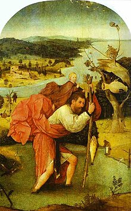
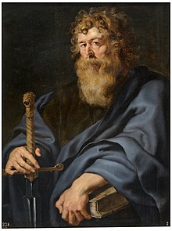
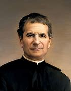
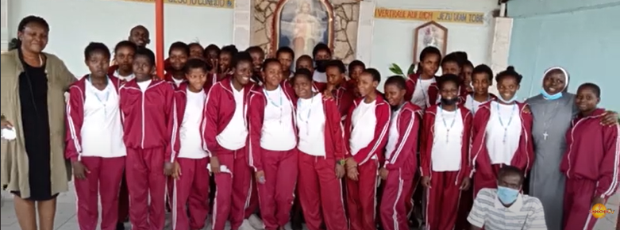
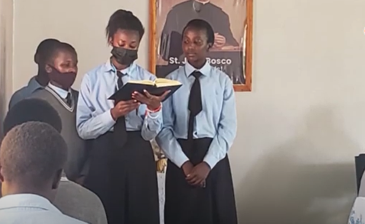
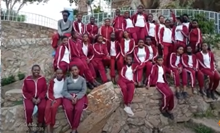

St. Christopher Girls High School is dedicated to empowering young women through quality education and personal development.
Founded in 2009, St. Christopher Girls High School has been dedicated to providing quality education and fostering a supportive community for over 15 years.
Our Facilities
Qualified and dedicated staff.
Computer and science laboratories.
Well stocked library.
Good Boarding facilities and balanced diet.
Swimming pool available in school with instructors.
IRE lessons offered.
Prayer room available for Muslim students.
Educational trips and school spiritual retreat programmes.
A variety of co-curriculum activities available including a gym instructor.
Electricity and piped water.
Guidance and counselling offered by school catechist.
Catechism lessons offered to Catholic students.
Sunday mass celebration conducted by school chaplain Fr. Mathuva.
Rosary making Club available in school.
01 / 14
Our Mission
Our mission is to empower girls through education, fostering academic excellence, leadership, and character development.
Our Vision
Our vision is to nurture future leaders who are confident, compassionate, and innovative.
To inspire and prepare our students to be confident, compassionate leaders who positively impact their communities and the world.
Core Values
Goodness
Excellence
Integrity
Respect
Compassion
Responsibility
Perseverance
Innovation
Collaboration
Leadership
We are guided by the following principles:
The power of Prayer
The success of perseverance
The pleasure of working
The value of time
The influence of example
The obligation of duty
The virtue of patience
The worth of character
The improvement of talent
THE PRESENCE OF GOD
Principal Ann Mwithiga
Principal's Greeting
A message of welcome and vision for our school family
Welcome to St. Christopher Girls High School! It is both a privilege and a great responsibility to lead this remarkable community of learners, educators, and families. Every day, I am inspired by the energy, creativity, and determination of our students as they strive to achieve excellence in both academics and character development.
Our school is built on a strong foundation of values that guide us in empowering young women to become confident, compassionate, and resilient leaders of tomorrow. At St. Christopher, we believe that education goes beyond textbooks and classrooms — it is about nurturing the whole person: mind, body, and spirit.
With over 15 years of experience in the field of education, I have seen firsthand the transformative power of learning. It is my unwavering commitment to foster an environment where each student is challenged, supported, and encouraged to reach their full potential, both academically and personally.
As a team, our dedicated staff and I work tirelessly to create a school culture that promotes inclusivity, creativity, and excellence. We are committed to ensuring that every student feels valued, respected, and empowered to pursue her dreams. Whether in the classroom, on the field, or in extracurricular activities, we strive to provide opportunities that inspire our students to discover their passions and unlock their potential.
Thank you for being a part of this incredible journey. Together, we will continue to build a legacy of success, integrity, and lifelong learning. I look forward to another year of growth, achievement, and joy as we work hand in hand to prepare our students for the future.
Ann Mwithiga
Principal, St. Christopher Girls High School
Who is Saint Christopher?

Patron of TravelersSaint Christopher carrying the Christ Child — patron of all who journey.
Saint Christopher is one of the most venerated saints in Christianity. He is often depicted as a giant man carrying the Christ Child on his shoulders while crossing a river. According to legend, Christopher was a pagan who dedicated his life to serving Christ by helping travelers across a treacherous river. His name, "Christopher," literally means "Christ-bearer," reflecting his role in the legend.
The most popular story of Saint Christopher's life tells of him seeking to serve the strongest master he could find. He served a king, but when he learned that the king feared the devil, he left to serve the devil. However, when he realized that the devil was afraid of Christ, he sought to serve Christ instead. In his quest, he encountered a child who asked to be carried across a river. As he carried the child, the weight became unbearable, and he realized that he was carrying the weight of the world, symbolizing the burden of sin.
Saint Christopher is recognized as the patron saint of travelers, drivers, and those who journey. His feast day is celebrated on July 25th, and he is often invoked for protection during travel. The iconography surrounding Saint Christopher emphasizes his dedication and sacrifice, as well as the virtues of strength and faith. Despite the lack of historical evidence for his life, his story resonates with many and continues to inspire devotion.
Quotes About Saint Christopher
“
He who carries Christ in his heart carries the world upon his shoulders.
”
“
To serve others is to serve Christ; to help a traveler is to bring hope to the journey.
”
“
May the strength of my faith shield those who travel, as I once carried the weight of the world.
”
“
Through trials and struggles, let faith be your guiding star.
”
“
True strength lies not in might, but in the kindness we extend to one another.
”
The Saints Who Inspire Us Every Day
Saint Peter
One of Jesus' twelve apostles, known as the first pope and martyr.
Saint Peter, originally named Simon, was one of Jesus' twelve apostles and is often regarded as the first pope of the Catholic Church. According to tradition, he was martyred in Rome, crucified upside down at his own request, feeling unworthy to die in the same manner as Christ. Peter is known for his bold proclamations of faith, including his confession of Jesus as the Messiah. He played a crucial role in the early Christian community and is often depicted holding keys, symbolizing his role in the Church's foundation and his authority.

Saint Paul
Apostle known for his missionary journeys and letters, shaping early Christianity.
Originally named Saul of Tarsus, Saint Paul was a Pharisee who persecuted Christians until he experienced a dramatic conversion on the road to Damascus. This event led him to become one of Christianity's most influential missionaries and theologians. Paul undertook several missionary journeys throughout the Mediterranean, establishing Christian communities and writing letters (epistles) that form a significant portion of the New Testament. His teachings emphasized salvation through faith in Christ and the inclusion of Gentiles in the Christian faith, shaping early Christian doctrine.
Saint Francis of Assisi
Founder of the Franciscan Order, known for his love for nature and animals.
Saint Francis of Assisi is best known for his profound love for nature and animals, believing that all creation reflects God's glory. He founded the Franciscan Order, emphasizing poverty, humility, and a life of simplicity. One of the most famous legends about him is the story of the "Sermon to the Birds," where he preached to a flock of birds, illustrating his deep connection with nature. His commitment to peace and care for creation made him a beloved figure, and he is often depicted with animals, symbolizing his love for all living beings.
Saint Thérèse of Lisieux
Known as "The Little Flower," celebrated for her simple and humble approach to faith.
Known as "The Little Flower," Saint Thérèse of Lisieux is celebrated for her simple and humble approach to faith. She entered the Carmelite convent at a young age and lived a hidden life of prayer and devotion. Her autobiography, "Story of a Soul," describes her "little way" of spiritual childhood, emphasizing trust in God and love as the essence of holiness. Despite her brief life (she died at 24), she is a Doctor of the Church and is known for her deep spirituality, inspiring countless people to seek God through simplicity and love.
Saint Augustine
A theologian and philosopher whose writings greatly influenced Western Christianity.
Saint Augustine was a theologian and philosopher whose writings have profoundly influenced Western Christianity. His early life was marked by a search for truth and fulfillment in various philosophies and lifestyles until his conversion, which he details in his famous work "Confessions." Augustine became the Bishop of Hippo and wrote extensively on topics like grace, sin, and the nature of God. His notable work, "The City of God," addresses the relationship between Christianity and secular society, shaping theological thought for centuries.
Saint Benedict
Founder of monasticism in the West and author of the Rule of Saint Benedict.
Saint Benedict is considered the founder of Western monasticism, known for establishing the Rule of Saint Benedict, which outlines guidelines for monastic life. His life and teachings emphasized community living, prayer, and work, profoundly impacting monasticism in Europe. One legend recounts how he resisted temptations by seeking solitude and prayer in the mountains. His influence is evident in the many monasteries that follow his rule, promoting a balanced life of prayer, study, and labor, making him the patron saint of monks.
Saint Joan of Arc
A peasant girl who became a national heroine of France for her role in the Hundred Years' War.
Saint Joan of Arc, a peasant girl born in France, claimed to have received visions from saints instructing her to support Charles VII and drive the English from France during the Hundred Years' War. Her leadership and bravery led to significant victories, including the lifting of the siege of Orléans. Captured by the English and tried for heresy, she was burned at the stake at the age of 19. Joan's unwavering faith and martyrdom inspired her canonization in 1920, and she is celebrated as a national heroine and symbol of courage.
Saint Catherine of Siena
A mystic and activist who played a role in church reform.
Saint Catherine of Siena was a mystic and activist who played a significant role in church reform during the 14th century. She is known for her deep spiritual writings and her efforts to persuade Pope Gregory XI to return the papacy to Rome from Avignon. One famous legend tells of her receiving the stigmata, marks of Christ's wounds, while in prayer. Her influential letters and dialogues emphasized the need for personal holiness and societal reform, and she was declared a Doctor of the Church, recognized for her theological contributions.
Saint Michael the Archangel
Leader of the heavenly hosts, protector against evil.
Saint Michael the Archangel is revered as the leader of the heavenly hosts and a protector against evil. He is often depicted defeating Satan, particularly in the Book of Revelation. One famous legend recounts how he battled the dragon (representing evil) and cast him out of heaven. Saint Michael is invoked for protection in spiritual warfare, and his feast day is celebrated with prayers for deliverance from evil. He is a symbol of courage, strength, and divine justice.
Saint Luke
The author of the Gospel of Luke and the Acts of the Apostles, patron saint of physicians.
Saint Luke, the author of the Gospel of Luke and the Acts of the Apostles, is recognized as the patron saint of physicians. He was a physician himself and is often depicted with a scroll or a book. One notable legend describes how he painted the first icon of the Virgin Mary, which is considered a miraculous work. His writings emphasize the compassion of Jesus and the role of the Holy Spirit in the early Church. Luke's emphasis on social justice and care for the marginalized resonates deeply in Christian teachings.
Saint Antony of Padua
A Franciscan priest, renowned for his powerful preaching and being the patron saint of lost things.
Saint Antony of Padua, a Franciscan priest known for his powerful preaching, is often invoked as the patron saint of lost things. One legend tells of his miraculous ability to locate lost items, particularly in cases of spiritual distress. His sermons and teachings emphasized the importance of faith and charity, making him a beloved figure among Catholics. Antony's legacy is also marked by his devotion to the poor and his profound theological insights, making him one of the most popular saints in the Church.
Saint Giuseppe Cottolengo
Known for his charitable work and founding the Little House of Divine Providence.
Saint Giuseppe Cottolengo was a priest known for his charitable work, particularly in caring for the poor and marginalized. He founded the Little House of Divine Providence in Turin, Italy, providing a place of refuge for those in need, including the sick and abandoned. His life exemplified compassion, and he was deeply committed to the works of mercy, serving both spiritually and materially. He is recognized for his dedication to social justice and is honored for his commitment to helping the less fortunate.

Saint Don Bosco
Founder of the Salesian Society, dedicated to helping youth and education.
Saint Don Bosco, known for his dedication to youth and education, founded the Salesian Society, focusing on helping disadvantaged children. He established schools and orphanages to provide opportunities for education and spiritual growth. One of the most famous stories about him is his dream of a vision where he saw young people being led astray and was inspired to help them through education and faith. His legacy continues through the work of the Salesians worldwide, impacting countless lives through their educational programs.
Saint Josephine Bakhita
A former slave who became a nun and is a symbol of freedom and dignity.
Saint Josephine Bakhita was born in Sudan and kidnapped as a child, enduring a life of slavery. After gaining her freedom, she became a nun in Italy and dedicated her life to God and serving others. Her story is a powerful testimony to the resilience of the human spirit and the dignity of every individual, regardless of their past. Canonized in 2000, she is a symbol of hope and freedom, inspiring people worldwide to advocate for justice and human rights.
01 / 14
Curriculum
Our curriculum is designed to foster critical thinking, creativity, and a love for learning. We offer a wide range of subjects to cater to the diverse interests and talents of our students.
Mathematics: Developing problem-solving skills and logical reasoning.
Science: Encouraging curiosity and scientific inquiry.
Languages: Enhancing communication skills in multiple languages.
Humanities: Understanding history, geography, and social studies.
Arts: Fostering creativity through visual and performing arts.
Physical Education: Promoting physical health and teamwork.
Special Programs
We offer a variety of special programs to enhance our students' learning experience:
STEM Club: Hands-on projects and competitions in science, technology, engineering, and math.
Music and Drama: Opportunities to participate in school plays, concerts, and talent shows.
Sports Teams: Competitive teams in various sports, promoting teamwork and physical fitness.
Community Service: Encouraging students to give back through volunteer work and service projects.
Curriculum Highlights
Our curriculum stands out for its:
Interdisciplinary Approach: Integrating different subjects to provide a holistic learning experience.
Project-Based Learning: Encouraging students to apply their knowledge through real-world projects.
Personalized Learning: Tailoring education to meet the individual needs and interests of each student.
Global Perspective: Preparing students to be global citizens through diverse and inclusive content.
We Believe in Prayers
We teach our students that prayers can change lives. Can we teach you here kindly?
Join Us in Prayer
Explore the power of prayer and how it can positively impact your life.
What is prayer?
Prayer is the act of communicating with God. It can be a form of worship, supplication, or gratitude.
Why do Catholics pray?
Catholics pray to seek God's guidance, express their love for Him, and ask for strength and forgiveness.
How should I pray?
You can pray in many ways, including formal prayers like the Our Father, or through personal conversations with God.
What are common forms of prayer?
Common forms include adoration, contrition, thanksgiving, and supplication (ACTS).
What is the significance of the Rosary?
The Rosary is a form of prayer that involves meditating on the life of Christ through a series of prayers and beads.
How often should I pray?
It is encouraged to pray daily, but you can also pray at any moment throughout the day as needed.
What are some examples of personal prayer?
Personal prayers can include spontaneous prayers, journaling, or prayers of gratitude and reflection.
Why is prayer important in the Catholic faith?
Prayer strengthens our relationship with God, helps us discern His will, and provides comfort and support in life.
Can I pray anywhere?
Yes, you can pray anywhere and at any time; God is always available to listen.
What role does silence play in prayer?
Silence allows for reflection and listening to God's voice, creating a deeper connection during prayer.
How can I deepen my prayer life?
Deepening your prayer life can involve setting aside specific times for prayer, reading scripture, or engaging in spiritual reading.
Can prayer change God's mind?
While prayer does not change God's mind, it can change our hearts and align us more closely with His will.
What is contemplative prayer?
Contemplative prayer is a form of silent, wordless prayer where one focuses on being in God's presence and experiencing His love.
The Lord’s Prayer
Our Father, who art in heaven, hallowed be thy name; thy kingdom come; thy will be done on earth as it is in heaven. Give us this day our daily bread; and forgive us our trespasses, as we forgive those who trespass against us; and lead us not into temptation, but deliver us from evil. Amen.
The Hail Mary
Hail Mary, full of grace, the Lord is with thee; blessed art thou among women, and blessed is the fruit of thy womb, Jesus. Holy Mary, Mother of God, pray for us sinners, now and at the hour of our death. Amen.
The Apostle’s Creed
I believe in God, the Father Almighty, creator of heaven and earth; and in Jesus Christ, his only Son, our Lord, who was conceived by the Holy Spirit, born of the Virgin Mary, suffered under Pontius Pilate, was crucified, died, and was buried; he descended into hell; on the third day he rose again from the dead; he ascended into heaven, and sits at the right hand of God, the Father Almighty; from thence he shall come to judge the living and the dead. I believe in the Holy Spirit, the holy catholic Church, the communion of saints, the forgiveness of sins, the resurrection of the body, and life everlasting. Amen.
For the Sake of His Sorrowful Passion
For the sake of His sorrowful Passion, have mercy on us and on the whole world. Amen.
What is the Nicene Creed?
We believe in one God, the Father Almighty, Maker of heaven and earth, and of all things visible and invisible. And in one Lord Jesus Christ, the only-begotten Son of God, born of the Father before all worlds; Light of Light, very God of very God; begotten, not made, being of one substance with the Father, by whom all things were made.
What is the Glory Be?
Glory be to the Father, and to the Son, and to the Holy Spirit, now and forever. Amen.
What is the Act of Contrition?
O my God, I am heartily sorry for having offended You, and I detest all my sins because of Your just punishments, but most of all because they offend You, my God, who are all-good and deserving of all my love. I firmly resolve, with the help of Your grace, to sin no more and to avoid the near occasions of sin. Amen.
What is the Prayer of St. Francis?
Lord, make me an instrument of your peace. Where there is hatred, let me sow love; where there is injury, pardon; where there is doubt, faith; where there is despair, hope; where there is darkness, light; and where there is sadness, joy. O Divine Master, grant that I may not so much seek to be consoled as to console;
What is the Hail Mary?
Hail Mary, full of grace, the Lord is with thee; blessed art thou among women, and blessed is the fruit of thy womb, Jesus. Holy Mary, Mother of God, pray for us sinners, now and at the hour of our death. Amen.
What does it mean to pray?
Prayer is a way to communicate with God, offering worship, supplication, and gratitude.
Why is prayer important in Catholicism?
Prayer is vital in Catholicism for spiritual growth, seeking guidance, and deepening one's relationship with God.
What is the significance of the Lord's Prayer?
The Lord's Prayer is a model of how to pray, given by Jesus, encompassing adoration, supplication, and thanksgiving.
What is the purpose of meditation in prayer?
Meditation helps one focus on God's presence, fostering a deeper understanding and connection to the divine.
How can I incorporate prayer into my daily life?
You can incorporate prayer into your daily life through morning prayers, gratitude reflections, and regular participation in Mass.
How do I pray the Rosary?
To pray the Rosary, follow these steps:
Begin with the Sign of the Cross: Make the Sign of the Cross and say the Apostles' Creed.
Our Father: Pray one Our Father on the first bead.
Hail Mary: Pray three Hail Marys on the next three beads.
Glory Be: Pray a Glory Be.
Announce the First Mystery: Reflect on the first mystery (Joyful, Sorrowful, Glorious, or Luminous) and pray an Our Father.
Hail Marys: Pray ten Hail Marys while meditating on the mystery.
Repeat: Repeat the previous two steps for each of the remaining mysteries (total of five).
Conclude: After the five decades, pray the Hail Holy Queen and end with the Sign of the Cross.
Each decade of the Rosary focuses on a specific mystery from the life of Jesus and Mary, allowing for meditation on these important events.
01 /
Do You wish to see more
Gallery
Take a visual tour of our school and see our students in action.
Our brand is so strong even the fonts feel motivated.
School Brand
Our brand is so strong even the fonts feel motivated.
“A name is not a label; it is a promise written in permanent ink.”
— Ann Mwithiga
Fun Fact Brand colours are processed by the brain before faces are — that is exactly why a uniform makes a school feel unified almost instantly.

We do not just play games; we build futures one push-up at a time.
Sports Activity
We do not just play games; we build futures one push-up at a time.
“The playing field has no traffic jam; everyone arrives at their own pace.”
— Ann Mwithiga
Fun Fact A blue whale’s heart beats only five to six times a minute — slower than a post-sports-day heartbeat.
Our crest is not just a picture; it is a handshake between a school and its future.
School Logo
Our crest is not just a picture; it is a handshake between a school and its future.
“A crest is where identity and ambition shake hands.”
— Ann Mwithiga
Fun Fact Heraldic shields originally identified knights in battle, and schools later adopted them to mark values worth defending.
Our classrooms have a strict no-yawns-allowed policy.
Classroom
Our classrooms have a strict no-yawns-allowed policy. Midnight coffee is banned; curiosity is compulsory.
“Every chalk mark is a breadcrumb leading somewhere brave.”
— Ann Mwithiga
Fun Fact The word ‘school’ comes from the Greek ‘scholè’, which meant ‘leisure’ — we turned that leisure into lively learning.

Even our quiet moments are loud in spirit.
Religious Activity
Even our quiet moments are loud in spirit.
“Faith is the silence that speaks when words give up.”
— Ann Mwithiga
Fun Fact Kenyan schools welcome students of many faiths; prayer rooms and inter-faith respect are part of our daily harmony.
If there is a microphone and a crowd, count us in.
School Event 2
If there is a microphone and a crowd, count us in. We brought the party; the school brought the rules.
“Memory is a camera that never runs out of film.”
— Ann Mwithiga
Fun Fact Chimpanzees share about 98.7 % of our DNA — roughly the same percentage of students who smile in event photos.
We take ‘extra’ so seriously it practically counts as a subject.
Extra Activity
We take ‘extra’ so seriously it practically counts as a subject. The homework? Just have fun.
“Do what the ordinary dares not, and the extraordinary becomes routine.”
— Ann Mwithiga
Fun Fact The human heart pumps about 2,000 gallons of blood daily — about the same energy our clubs burn through in one afternoon.

Pure delight caught on camera. No filters, no retakes, just joy going viral.
Delight Moment
This is a photo of pure delight. No filters, no retakes, just joy going completely viral.
“Delight is the heart’s way of applauding.”
— Ann Mwithiga
Fun Fact Laughter boosts immunity by increasing infection-fighting antibodies — so school events are technically health care.
Event one: the crowd’s official excuse to be extra.
School Event 1
Event number one: the crowd’s official excuse to be delightfully extra.
“A beginning is just an ending that got tired of waiting.”
— Ann Mwithiga
Fun Fact First impressions form in about seven seconds — good thing our events are designed to be unforgettable.
Sunday best always looks better in school blues.
School Mass Service
Sunday best always looks better in school blues. Our chaplain’s homily rating? Five stars, no comments section.
“Worship is the heart’s morning prayer and evening anchor.”
— Ann Mwithiga
Fun Fact The oldest music notation dates to about 1400 BC — humans have been lifting voices together far longer than we have had written language.
Field trips: where the classroom grows legs and explores the countryside.
School Trip
Field trips: where the classroom grows legs and explores the countryside. The bus driver is the real hero.
“The best lessons are the ones your feet write on the road.”
— Ann Mwithiga
Fun Fact Kenya’s geography textbook comes alive when students see plateaus and valleys in person — geography in glorious 3-D.
When Don Bosco visits, kindness brings its own cheerleaders.
Don Bosco
When Don Bosco visits, kindness brings its own cheerleaders. The warm-up song is pure gratitude.
“Education without affection is a lesson half-taught.”
— Ann Mwithiga
Fun Fact Don Bosco’s motto was ‘Health, study, and holiness’ — three pillars our daily routine still follows.
Our dorms run on balanced diets and balanced sleep. Spiders have been warned.
School Dormitory
Our dorms run on balanced diets and balanced sleep schedules. The spiders have been officially warned.
“A home away from home is where dreams are allowed to find their pillow.”
— Ann Mwithiga
Fun Fact Students who keep a consistent sleep schedule remember up to 20 % more of what they study — dorms quietly make that possible.
Second mass service, first-class joy.
School Mass Service 2
Second mass service, first-class joy. Our chaplain brought extra humour this Sunday.
“Sometimes worship is simply showing up and believing anyway.”
— Ann Mwithiga
Fun Fact Gregorian Chant is named after Pope Gregory I — chanting together famously calms the heart’s rhythm.
One adventurous moment, zero regrets, and about a thousand stories to tell.
Adventurous Moment
One adventurous moment, zero regrets, and roughly a thousand stories that still need better punchlines.
“Adventure is the surest cure for a timid heart.”
— Ann Mwithiga
Fun Fact Kenya’s Great Rift Valley stretches over 6,000 km — that same spirit of exploring far is what our clubs encourage every week.
Round two of adventure: the map is still safe, but the memories are not.
School Trip 2
Round two of adventure: the map survived, the snacks did not.
“Every journey is a story that had the courage to book a seat in advance.”
— Ann Mwithiga
Fun Fact Tourism is built on curiosity — about 1.4 billion international trips happen globally each year. Ours are the best.
Exams: where pens become swords and silence becomes strategy.
School Exam Time
Exams: where pens become swords, silence becomes strategy, and snacks become stress-relief.
“An exam is not a verdict; it is a mirror held briefly to your habits.”
— Ann Mwithiga
Fun Fact The word ‘exam’ comes from the Latin ‘examen’, meaning the tongue of a balance — it weighs, it never defines.
School Advert
Watch Our Story Unfold
Dear Girl Who Dares to Dream
To every girl chasing a wonderful dream too big for the horizon — bring it here. You will find teachers who coach, friends who cheer, and prayer rooms that remind you nothing is ever too heavy to carry. Dream loudly; these halls were built to make room.
“Every great woman once sat in a classroom wondering if she could. We exist to end that wonder.”
— Ann Mwithiga
Fun Fact Since 2009, St. Christopher Girls High School has shaped thousands of young women in Machakos — and its name honours the patron saint of travellers, because every student here is on a journey worth taking.
St. Christopher Girls High School – School Fees Breakdown (as of 2025)
Term
Start Date
End Date
Fees
Term 1
January 1
March 31
20,000 Ksh.
Term 2
May 3
July 31
15,000 Ksh
Term 3
September 3
October 31
15,000 Ksh
Contact St. Christopher Girls High School for Admissions


.png)
.png)
.png)
.png)
.png)
.png)
.png)
.png)
.png)
.png)